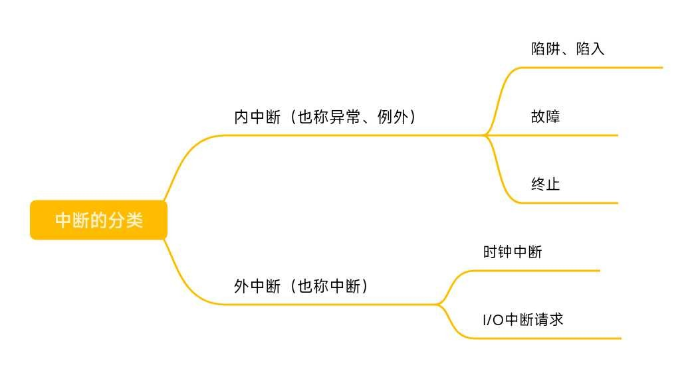

中断和异常
对《操作系统》的知识梳理 五
零、总览

一、中断的作用
CPU上会运行两种程序，一种是操作系统内核程序，一种是应用程序，在合适的情况下，操作系统内核会把CPU的使用权主动让给应用程序。
总之，一个应用程序一旦上CPU运行之后，它就会一直运行下去，除非发生了中断。一旦发生了中断，就会让CPU立即停止运行应用程序，转而执行内核程序。“中断”是让操作系统内核夺回CPU使用权的唯一途径，会使CPU由用户态变为内核态 。
二、中断的类型
1.内中断
与当前执行的指令有关，中断信号来源于CPU内部。
例如：试图在用户态下执行特权指令、执行除法指令时发现除数为0、有时候应用程序想请求操作系统内核的服务，此时会执行一条特殊的指令——陷入指令（非特权指令），该指令会引发一个内部中断信号，系统调用就是使用这种方式完成。
2.外中断
与当前执行的指令无关，中断信号来源于CPU外部。
例如：时钟中断——由时钟部件发来的中断信号（例如每50 ms给CPU发送一个中断信号)、I/O中断——由输入/输出设备发来的中断信号（CPU每一条指令执行结束都会例行检查是否有外中断信号）
三、中断的分类
陷阱、陷入：由陷入指令引发，是应用程序故意引发的。
故障：由错误条件引起，可能被内核程序修复，内核程序修复故障后会把CPU使用权还给应用程序，让它继续执行下去，如：缺页故障。
终止：由致命错误引起，内核程序无法修复该错误，因此一般不再将CPU使用权还给引发终止的应用程序，而是直接终止该应用程序。如：整数除0、非法使用特权指令等。
四、中断机制的基本原理
不同的中断信号，需要用不同的中断处理程序来处理。当CPU检测到中断信号后，会根据中断信号的类型去查询“中断向量表”，以此来找到相应的中断处理程序在内存中存放的位置。
五、总结